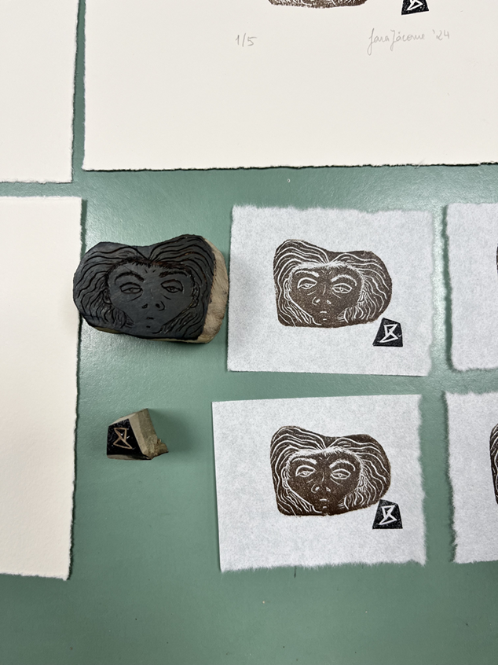
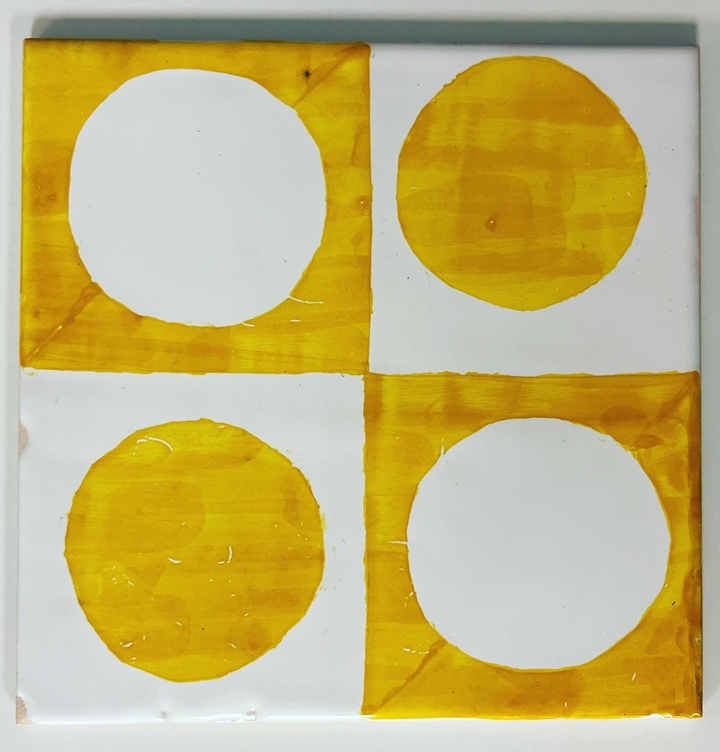

<!DOCTYPE html>
<html lang="en">
<head></head>
<body></body>

<div id="image-modal" class="image-modal">
    <span id="close-modal" class="close">&times;</span>
    <button id="prev-image" class="nav-button">&#10094;</button>
    
    <p id="modal-caption" class="modal-caption"></p>
    <button id="next-image" class="nav-button">&#10095;</button>
</div>

<div class="gallery-grid" id="gallery">
    
    
    
    
    
    
    
    
    
    
    
    
    
    
    
</div>